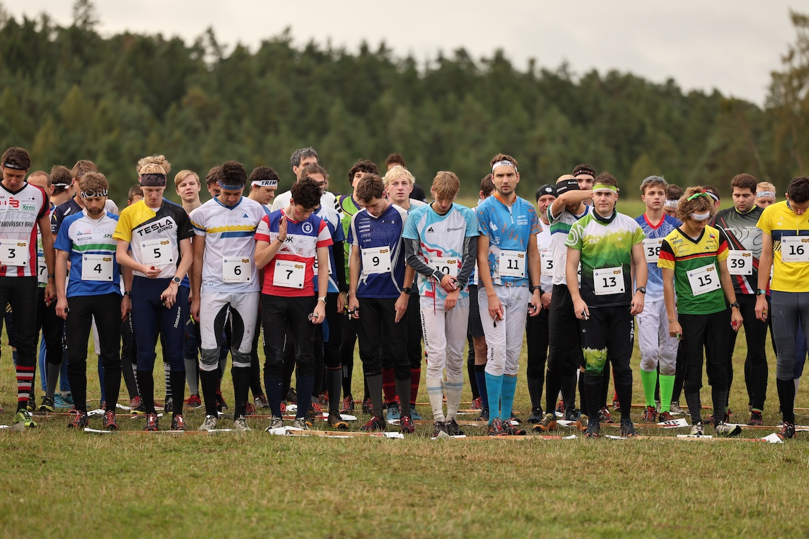
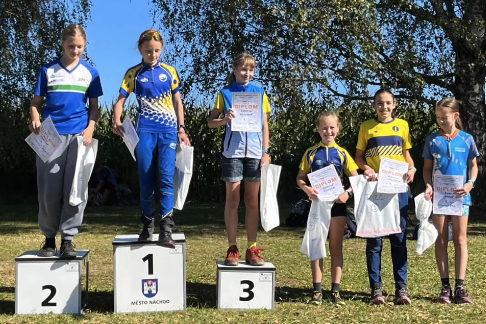

Aktuální novinky

19. října 2025
Rodinné štafety 2025 – vítězství pro Švadlenovi
32. ročník Rodinných štafet se letošní rok uskutečnil 19. října 2025 v areálu tábora Mlýnek u Velin. Od pořadatelů Karla Haase a Jana Kaplana byly připraveny tratě převážně v rovinatém terénu s hustou sítí cest a průseků, les byl porostově rozmanitý. Okolo 110 štafet běželo na mapě Hejdůšek a Bludný kořen. Pro třetí úseky bylo připravené mapové překvapení, které se skládalo z dvou bílých výřezů v mapě. Závodníci předem mapu neviděli, takže přesně nevěděli, co je v lese čeká a některým to dost zamotalo hlavu. V cíli byli první Švadlenovi (CHC) ve složení Míša Švadlena, Pavel Švadlena a finišmenem byl Tom Křivda. Na druhém místě doběhli Prášilovi a na třetí pozici Srbovi.

5. října 2025
MČR štafet a klubů 2025 – TOP 10 pro štafetu mužů
Zakončení sezóny celostátních soutěží v orientačním běhu proběhlo ve Výšicích. V závodě štafet dosáhli na výborné 9. místo choceňští muži - Michal Švadlena, Martin Křivda a Tom Křivda. V neděli se klubovému družstvu podařilo zaběhnout pěkný výsledek v podobě 17. místa. Trojici výše zmíněných doplnila Katka Mimrová, Jana Semrádová, Eliška Kleiberová a Honza Sháněl. Štafety i klubové týmy postavili i choceňští veteráni. 7. místo vyběhli Ondra Pešek, Michal Pátek a Vojta Grundman.

28. září 2025
Klárka Janková šestá na MVčO
Klárka Janková doběhla šestá na Mistrovství Východočeské oblasti na klasické trati, které se konalo za pořadatelství @tjstartnachod . Moc hezké tratě na mapě Končiny v náročném kopcovitém terénu u Rtyně v Podkrkonoší čekaly na závodníky dalšího kola Východočeského poháru. V hlavní kategorii mužů a žen 4. místo shodně obsadili Ondřej Pešek a Jana Semrádová. Gratulujeme 🧡